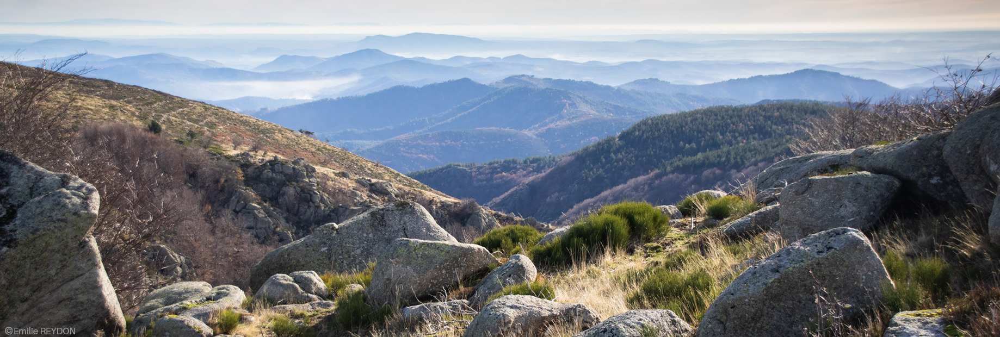
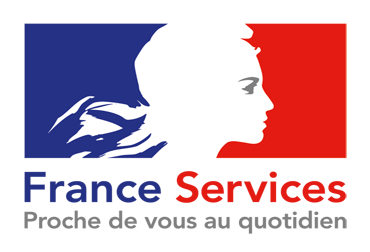
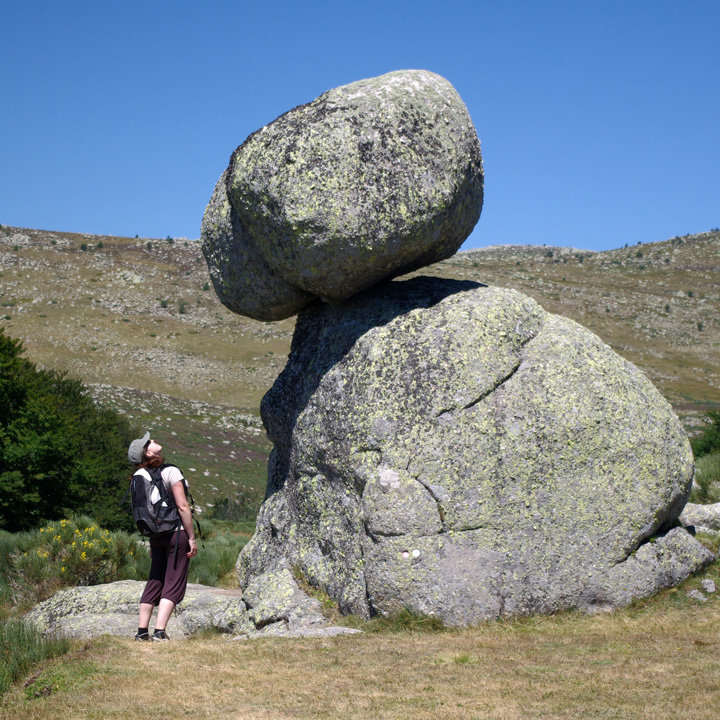

Pont-de-Montvert, Sud Mont Lozère
- 530 route de Finiels
- Permanence à Vialas, le jeudi

Émilie Reydon
Démarches, transports, petite enfance, santé, déchets, logement : les services du quotidien des 19 communes, réunis au même endroit.

Le transport solidaire du sud-est Lozère accompagne les habitants vers leurs rendez-vous médicaux. Des chauffeurs bénévoles sont recherchés.
Lire la suite
Programme d'intérêt général : permanences au Collet de Dèze, à Saint Étienne Vallée Française, à Florac et à Villefort.
Lire la suiteSéances de l'année 2026, délibérations en ligne.
Demandes de subvention par dossier CERFA, avant le 31 janvier.

Documentation, ordinateurs en libre accès et animatrices pour vous guider. Visioconférences possibles avec la CAF, la MSA ou France Travail.
Survolez la carte ou la liste pour voir les services présents dans chaque commune.
Le bulletin communautaire et Le Vent des Bancels, à feuilleter ou à télécharger. Tous les numéros depuis le n°94 sont conservés dans le kiosque.
Découvrir le kiosque


